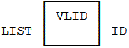
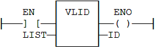

Function
Get the identifier of an embedded list of variables.
|
Name |
Type |
Description |
|
FILE |
STRING |
Pathname of the list file (.SPL or .TXT) - must be a constant value! |
|
Name |
Type |
Description |
|
ID |
DINT |
ID of the list - to be passed to other blocks. |
Some blocks have arguments that refer to a list of variables. For all these blocks, the list argument is materialized by a numerical identifier. This function enables you to get the identifier of a list of variables.
Embedded lists of variables can be:
„ Watch lists created with the Workbench. Such files are suffixed with .SPL.
„ Simple .TXT text files with one variable name per line.
Lists must contain single variables only. Items of arrays and structures must be specified one by one. The length of the list is not limited by the system.
List files are read at compiling time and are embedded into the downloaded application code. This implies that a modification performed in the list file after downloading will not be taken into account by the application.
ID := VLID ('MyFile.spl');

The function is executed only if EN is TRUE.

Op1: LD 'MyFile.spl'
VLID COL
ST ID